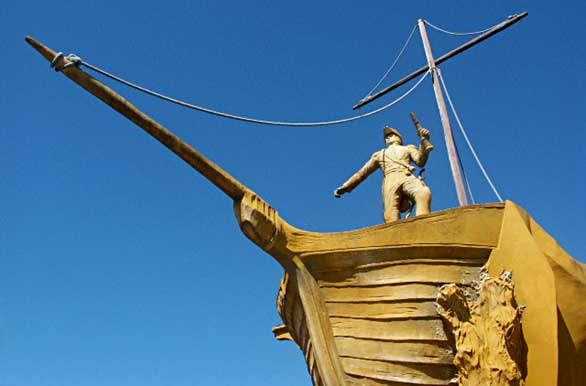
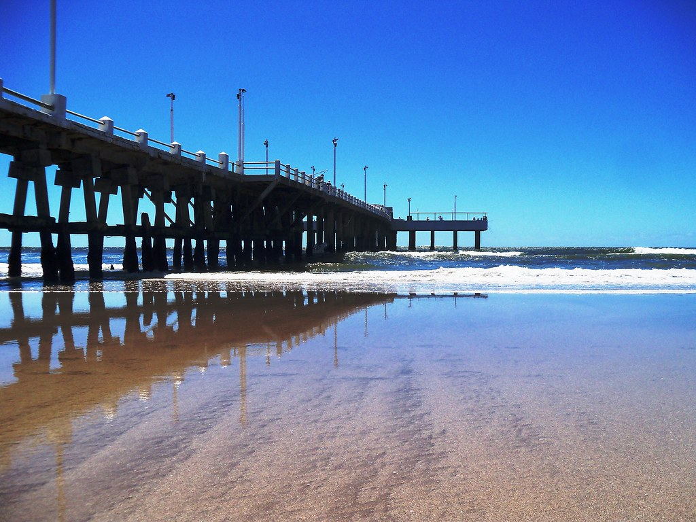

Convertida en un clásico de la temporada de verano. La ciudad balnearia de Mar de Ajó posee playas de arenas finas, libres de piedras y suave pendiente, balnearios con buenos servicios. Las áreas de camping, los juegos de playa, la programación de actividades recreativas, las confiterías con vista al mar conforman un paraje óptimo para disfrutar en familia y el contacto con la naturaleza.

Se trata de una obra realizada en homenaje al GENERAL DON JOSÉ DE SAN MARTÍN, que representa su desembarco en Bahía Paracas, Perú, en la goleta Moctezuna. Posee una altura de 10 mts. y se la puede encontrar en la Plazoleta ubicada en Av. del Libertador y Francisco de las Carreras.

El más grande de los 5 muelles de pesca que existen en todo el Partido de La Costa, tiene un largo de 270 metros, y su estructura es de hormigón armado. Su construcción comenzó por el año 1936, y actualmente cuenta con servicios de sanitarios, iluminación nocturna, restaurante, bar y confitería.